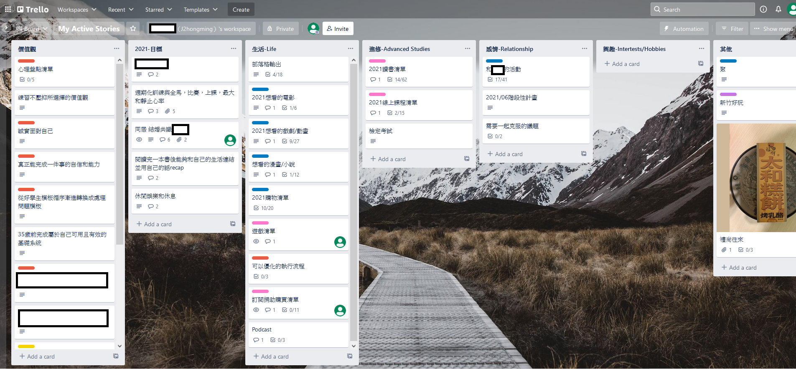
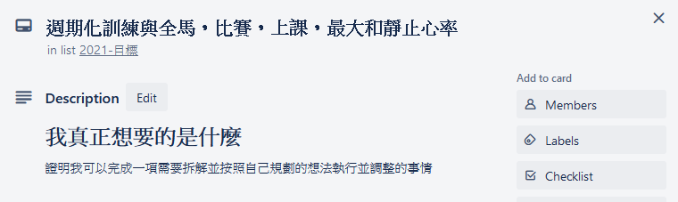
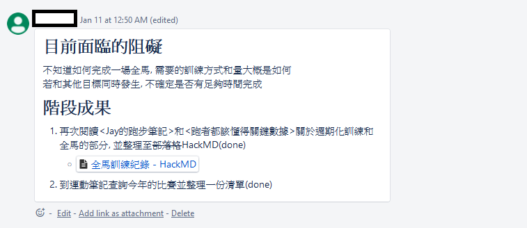
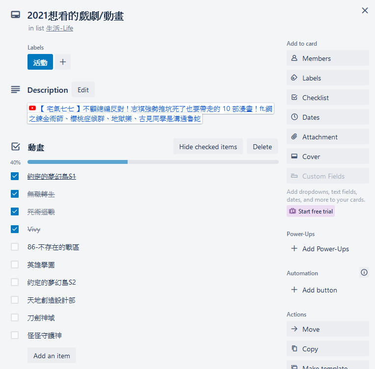
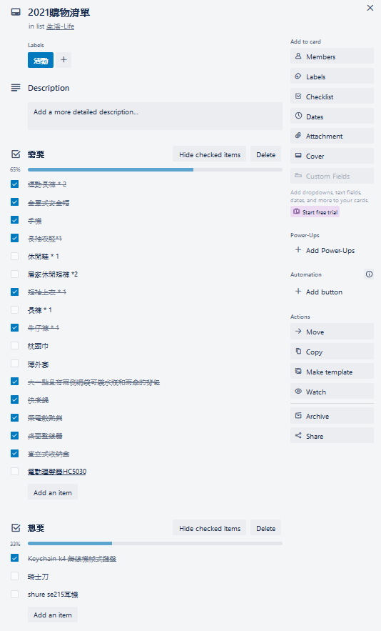
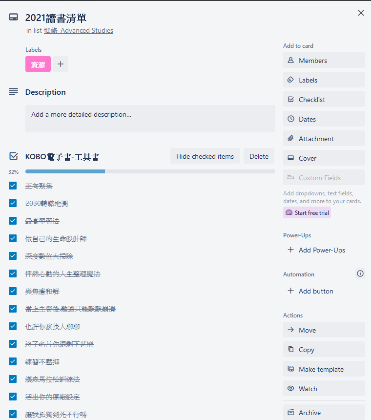
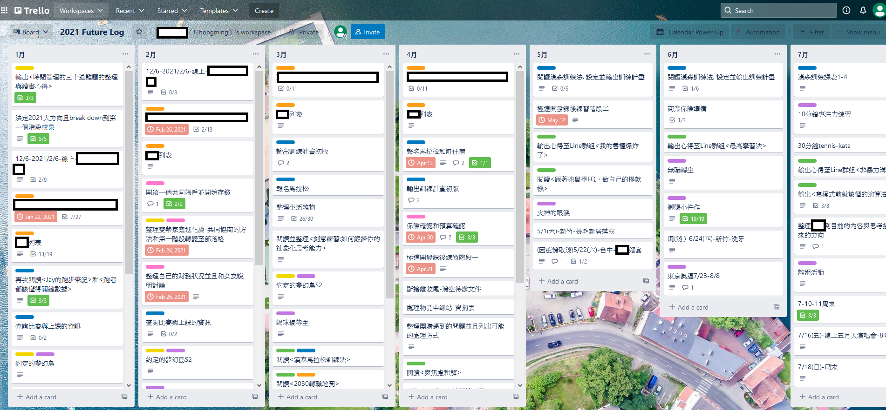
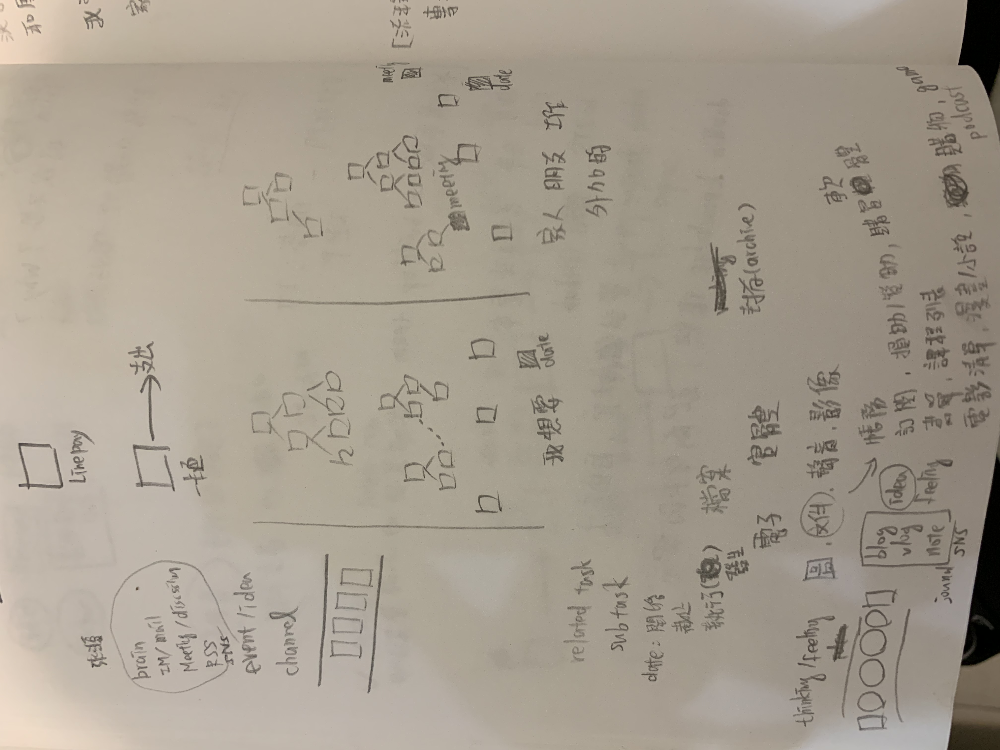

參考<子彈筆記>, <時間管理的三十道難題>, 加上實際執行後整理自己想要的東西如下
- 事情同時冒出來時, 能夠清楚輕重緩急的取捨
- 避免被突然冒出來的酷東西或事件打亂節奏
- 取得與培養處理不確定性高的任務的經驗, 原因是不太可能所有事情都是不確定性低的類型
- 減少那種忘記時很嘔的感覺
- 創造一條必經之路，減少焦慮
第一版的使用心得
- 異質性資訊整合在抽象化介面的必要性
- 任務排序本身也是個任務, 需要花時間
- 調整和休息也是任務
- 任務和紀錄會混在一起
- 認識時間單位與其節奏感: 番茄鐘, 日, 周, Sprint, 月, 年
異質性資訊整合在抽象化介面的必要性
舉個例子來看看我們面對的是什麼
現在正在看電子信箱, 從Mail得到一段訊息, “樂天Kobo電子書 週年慶 9/1-9/10 - 全館享69折”, 屬於任務或是行動呢? 若決定要對該訊息做出回應, 例如: 購買kobo優惠電子書, 可以再拆解相對應的行動清單, 舉例來說: 檢查預算, 決定要買的書。
處理到一半, 大腦浮現一段訊息: 中秋節回高雄需要訂高鐵票, 過了10秒, Line跳出了一段來自朋友的訊息: 這禮拜五要一起跑步嗎?, 5分鐘後, 女友打電話來, 聊天過程中推薦一部動畫<我的英雄學院>, 有時間可以看看, 電話掛斷後, 大腦浮現另一段訊息: 想到漢森訓練法中的速度跑的重點是什麼了, 需要做個紀錄才不會忘記! 20分鐘後發現無線滑鼠電池沒電, 衛生紙也快沒了…
主要想法來自於電腦玩物站長Esor在突破四個效率盲點，建立工作碎片不爆炸的工作流當中提到
兩三封郵件、幾次即時通、訪談會議的筆記、腦袋的想法、講電話記下的便利貼，全部都保持原樣，那工作當然愈來愈雜亂，效率愈來愈低下
碎片來自不同管道, 我們收集工作碎片，卻不處理工作碎片。什麼是不處理工作碎片呢？就是我們收集了要做什麼事情，卻不規劃怎麼做
方法一: 用頭腦記
優點: 訓練頭腦記憶
缺點: 事情太多太繁雜容易忘記, 是否能順利結束看運氣和是否剛好有觸發點, 例如看到衛生紙或電池備品才想起來要做這件事, 不巧的是21世紀的系統總是想盡辦法要在注意力所及的地方抓住它, 導致想法可能不斷地被中斷和發散, 最後忘記自己本來到底要做什麼, 例如: 我可能只想要在即時通訊軟體, 例如: Line, 查看和某人的對話訊息幫助回憶之前討論的重點, 在這段過程中, 我可能會被群組, 官方帳號的訊息吸引, 或者突然看到有另一個人的頻道有一個未讀訊息, 不自覺就點進去看
方法二: 用任務系統紀錄
優點: 知道已經紀錄於系統當中的某一個必經路徑, 減少認知負擔和焦慮
缺點: 若沒有回顧系統的時間, 等同於沒有紀錄, 是否能順利結束看運氣
上述異質性資訊的來源管道有那些呢? 大腦, 電子郵件, 即時通訊(IM), 一對一討論(面對面或電話), 多人討論(會議), 環境狀態

需要關注有兩點
- 每個管道的匯流方式
- 匯流後的行動規劃和排程
任務排序本身也是個任務
若使用來一個殺一個, 來兩個殺一雙的方式會發生什麼事?
這代表任務重要性是根據接收到訊息的時間, 以先前的例子會依照以下順序處理各個任務或行動
- Mail得到一段訊息, “樂天Kobo電子書 週年慶 9/1-9/10 - 全館享69折”
- 大腦浮現一段訊息: 中秋節回高雄需要訂高鐵票
- Line跳出了一段來自朋友的訊息: 這禮拜五要一起跑步嗎?
- 女友打電話來, 聊天過程中推薦一部動畫<我的英雄學院>, 有時間可以看看
- 大腦浮現另一段訊息: 想到漢森訓練法中的速度跑的重點是ä»麼了, 需要做個紀錄才不會忘記!
- 發現無線滑鼠電池沒電, 衛生紙也快沒了
這樣會讓自己焦慮感驟然上升且第一個接收到訊息的時間很大機會對自己來說不會是最重要的, 所以任務排序本身也必須是個任務
調整和休息也是任務
21世紀的系統會讓我有一種不斷被追著打的感覺, 一刻也不能休息, 有種漏球或錯過會造成不可挽回的狀態的焦慮感, 若不將調整和休息的重要性提升到和衛生紙快沒了的等級, 它們永遠會被其他感覺起來更重要的事情(其實並沒有)淹沒, 造成其他不可逆的狀態改變, 例如: 回不去的黑眼圈
這部分的想法源自於學習爵士鼓時體驗的節奏感以及馬拉松訓練的休息日, 試試看幫忙自己留個不用做什麼也沒關係的5分鐘到10分鐘
任務和紀錄會混在一起
大腦很常浮現想法, 例如: 我要整理個人資訊流第一版使用心得和第二版概念
事件發生, 若未區分任務管理或筆記管理, 讓它們交雜在一起, 會造成焦慮和混亂, 導致不斷問自己現在要處理的事到底是任務還是要整理一段紀錄
<整理個人資訊流第一版使用心得和第二版概念>的事件是一個任務, 會有粒度(目標, 階段任務和行動清單)和狀態(收集資訊待定義, 已完成), 所包含的資訊內容是紀錄, 例如: 本篇內容
認識時間單位
體驗到行動時以番茄鐘做切割有時候會比以任務做切割更有節奏感
以番茄鐘為單位的話, 看看一天和一周的組成大概的感覺
一個 :tomato: = (25 + 5) mins
一天 = 48 tomatos
一周(一到日) = 336 tomatos
1/3 睡眠 = 16 tomatos
1/3 收入來源 = 通勤+工作 = 1+16 = 17 tomatos
剩下1/3的部分
基本生活(三餐含交通, 盥洗, 洗澡) = 5+1+1 = 7 tomatos
自己的時間 <= 8 tomatos

第一版的組成元素
主要有三個概念
- My Active Stories
- Future Logs
- Daily Logs
實作的工具選用Trello, 使用狀況的部分, My Active Stories幫助聚焦大方向, Future log持續使用中, Daily Log後期荒廢掉
My Active Stories
從個人角度出發, 聚焦於大方向和紀錄, 避免被突然冒出來的酷東西或事件打亂節奏

主要核心是: 價值觀, 年度目標
價值觀: 紀錄生活中的發現, 或是在某些事件發生後, 自己想要的選擇
年度目標: 最多5個, 原因是自己只是一個平凡人, 時間和資源有限, 能夠在一年內完成5件事已經是老天保佑。參考時間管理的三十道難題的建議, 寫下我真正想要的是什麼, 目前面臨的阻礙和階段成果


從主要核心衍伸出來的部分: 生活, 進修, 感情, 興趣, 其他
生活: 紀錄想要看的東西(電影/戲劇/動畫/漫畫/小說), 購物清單(需要/想要), 訂閱/捐助清單, 部落格輸出。主要是因為自己無法多工且為了不輕易地被突然冒出來的酷東西打亂節奏, 例如: 目前正在看<無職轉生>, 某天被推坑<咒術迴戰>, 我可以有兩個選擇, 第一個是將<咒術迴戰>排入清單, 等到<無職轉生>告一段落再開始; 第二個是為了可以有更多話題可以聊, 暫停<無職轉生>, 提高<咒術迴戰>的優先權, 什麼? 你說已經是大人了, 可以有第三種選擇: 我全都要! 抱歉…以我自己的使用資源的效率, 目前還做不到XD


進修: 紀錄書單和實體課程與線上課程清單。

感情: 紀錄想要一起做的, 階段性計畫和需要一起克服的生活議題
興趣: 記錄想要體驗或有感受到樂趣的事情
樹狀結構如下
- 價值觀
- 年度目標
- 生活
- 部落格輸出: 後期幾乎都直接紀錄在HackMD的<部落格初稿>
- 年度想看的電影/戲劇/動畫
- 年度購物清單
- 年度想看的漫畫/小說
- 年度遊戲/podcast 清單
- 訂閱/捐助/購買清單
- 可以優化的執行流程
- 進修
- 年度書單/課程清單
- 檢定考試
- 感情
- 活動
- 階段性計畫
- 需要一起克服的議題
- 興趣
- 其他
- 聚
- 禮尚往來
年度Future log
時間粒度為月份, 主要檢視和調整每月的狀況和方向感, 有部分的任務從年度目標拆解而來


有幫助的地方如下:
- 集中注意力焦點, 時間區間為月, 例如: 我在9月份時只需要關注9月份的階段任務和有固定日期的行動清單, 頂多快速看一下後兩個月的主旨
- 優先次序的手感, 例如: 7月-11月的時候, 馬拉松練習的優先權重都會比其他事情更加優先
- 做回顧(retrospective)時很方便, 原因是時序和脈絡已經準備好
發現的劣勢:
- 有固定日期的行動和沒有固定日期的行動混在一起, 降低優先次序的手感, 例如: 9月份的”輸出心得至Line群組<練習不壓抑>”和”閱讀<活出你的原廠設定>”行動清單, 沒有一個固定日期, 另一個行動清單”9/9-新竹-AZ疫苗”是一個需要在特定日期執行的行動, 兩種類型混合在一起
Daily log
從子彈筆記的概念而來, 主要檢視和調整每天的狀況, 後期發現有明顯的缺陷: 粒度和狀態的組合造成混亂, 東西越堆越多, 讓人更沒有動力想去做, 導致後期荒廢掉
劣勢:
- 和Future log一起看會搞不清優先次序
- 不同粒度的事項混在一起, 需要先搞清楚現在的卡片是哪一種, 例如: 行動清單或是階段性任務, 由於階段性任務所需完成的時間和不確定性相較行動清單還高, 此外, 行動清單的已完成比較單純, 只要卡片主旨完成即可, 階段性任務已完成需要底下的行動清單都完成才算完成, 放在Daily log造成不必要的混亂
- 沒有特別安排任務排序的時間, 隨心所欲, 想排才排, 東西越推越多, 惡性循環
第二版概念

訊息來源
認清訊息來源有哪些: Brain, IM/Mail, Discussion/Meeting, RSS, SNS
粗略分為任務和紀錄兩個大方向
兩個大方向: 任務管理和記錄管理
Channel
事件發生到任務管理或記錄管理的中間需要有個緩衝空間協助快速紀錄
進入任務管理前的是Event/Idea Channel, Event例如: Mail得到一段訊息, “樂天Kobo電子書 週年慶 9/1-9/10 - 全館享69折”或者大腦浮現一段訊息: 中秋節回高雄需要訂高鐵票; Idea例如: 2022主要想做什麼
進入記錄管理前的是Think/Feel Channel, Think例如: 大腦浮現漢森訓練法中的速度跑的重點是什麼了, 需要做個紀錄才不會忘記或者是2021印象最深的三個時刻; Feel例如: 有時心中冒出的OS語音
需要保留一個時間單位將緩衝空間的東西移至任務管理或記錄管理
有可能會放到感覺不太對勁的Channel, 沒有關係, 可以再調整, 目標是快速紀錄且讓大腦知道訊息已經在系統當中的某一個必經路徑, 減少認知負擔和焦慮
任務管理
大方向: 以”我想要”和”外加於我本身這個個體的”(生活, 女友, 原生家庭, 朋友, 職涯)做切分 => Type
粒度: 目標, 階段任務, 行動清單
以樹狀來思考
一個目標由多個任務組合
一個任務由多個行動組合
一段訊息可能是一個任務或是一個行動
任務可以拆解成行動清單
行動可以關聯聚合到任務
使用Related Task和Subtask
日期: 開始, 截止, 執行(發生)
狀態:
待確認: 對現象和行為很模糊, 不太清楚會發生甚麼事或有矛盾
待定義: 尚未基於某些事實達成個人或多人共識
已確認: 事實[現象]，結論[個人, 多人共識]（未完成，已完成）
可能的流向
待確認 => 待定義 => 未完成結論 => 已完成
待確認 => 未完成結論 => 已完成
未完成結論 => 已完成
同樣地, 剛開始先別想太多, 主要先確認大方向的Type, 其他細節如粒度, 日期和狀態可以再調整, 提醒自己不要迷失在細節當中, 目標是可以協助自己讓事情推進
記錄管理
note, jounal, blog, vlog, SNS(twitter)
圖, 文件, 聲音, 影像
帳務, 訂閱清單, 購買軟體列表, 購物清單(需要/想要), 捐助/贊助列表, 書單和課程列表, 電影/戲劇/動畫列表, 漫畫/小說列表, 遊戲/Podcast列表